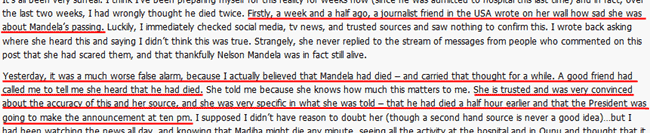

In a discussion at the G+ community, Alternate History, some interesting issues have been raised.
A community member shared a lengthy, cached article about someone’s belief that Nelson Mandela died Tuesday, 25 June 2013.
This is part of that cached article:

Here’s some of my reply at the G+ community, with notes.
The obvious question is: Was that more evidence of the Mandela Effect? The first “mistaken” report could be a simple mistake. In fact, it most probably was. But, to be fair, it’s difficult to evaluate with so little information about that report.
What caught my attention was the second “mistaken” report in the article. The writer said about that source, “She is trusted and was very convinced about the accuracy of this and her source, and she was very specific in what she was told – that he had died a half hour earlier and that the President was going to make the announcement at ten pm.”
Those are the kinds of specific details we see in credible Mandela Effect events, but with social media and its inherent flaws, it’s not evidence I can work with. For example, the Huffington Post offered the following credible explanation.
Worse, as the following article in The Drum explains, this became a global “goof.”

So, the waters have been thoroughly muddied, at least in terms of reports related to Mandela’s death in June 2013.
Despite (or because of?) these gaffes, more people seem to be examining conflicting Mandela-related memories. Even for those of us who are okay with Mandela Effect concepts, this seems like an unsettling time.
For some of us, these past couple of weeks have seemed surreal at times. Personally, it’s as if I’m watching a reality being constructed, a few hours at a time.
It’s as if the “fixed” points — using another G+ community member’s description — are arriving first in this timestream. Then, the connect-the-dots events between them are being filled in spontaneously. (This is difficult to articulate, but I hope you get my point.)
The thing is, if we believe the quantum theory that every potentiality exists in some reality (or dimension, universe, timestream, etc.), it’s possible that Nelson Mandela has died many times in the past few days and weeks… but not in this timestream.
The majority of new, conflicting reports can be explained by rumors set wild in social media. It’s essential to keep critical thinking skills engaged. Verify everything as best you can.
However, despite reporting errors, this is an intriguing time for those of us studying the Mandela Effect. That’s not just about history in this timestream, as well as alternative history. It’s also an opportunity to see the effects of social media and news reports, and how they influence our memories and — at times — form or restructure them.
And, personally, I’m sketching the visual images I recall from Nelson Mandela’s death, years ago. I’m going to watch to see how many of them reappear in the future… though I hope it’s many years away.
It is indeed curious, I wonder why we keep following the path where Mandela doesn’t die. It is also mysterious why this phenomenon seems to be so focused on Mandela, I know other celebrities and persons have it, but the Mandela memories seems to be one of the most widespread ones, even in countries where he wasn’t so important or known.
There are some in South African political circles who believe that Robert Sobukwe is greater than Nelson Mandela by far. ANC, being aware and afraid of contributions made by this Non-ANC hero, have been trying to rewrite history since they took over in 1994. They have amongst others rewritten the Sharpeville Day as their own and renamed it, they have rewritten June 16 1976 as their own and renamed it. All this is made in an effort to make sure that Sobukwe’s name will never reach RSA classrooms or SABC news. There is a believe that Mandela died long before 05 December 2013 but they kept him on life support in order to rewrite yet another milestone in history ‘Sobukwe Day’. Robert Mangaliso Sobukwe, the hero of the struggle, the only man who had a law that was passed by the apartheid regime to make sure that he remains in castody for the rest of his life ‘Sobukwe Clause’ was born on 05 December 1924. Was this a coincidence?
Alloys, that’s an interesting theory, but it doesn’t really pertain to Nelson Mandela’s funeral, long before 2013. This website isn’t about conspiracies, no matter how coincident. It’s about alternate realities.
I have not experienced a reality that has witnessed the death of Mandela. For me, Mandela was released from Robben Island in early 90’s, received a nobel peace prize and went on to be President of South Africa. But I have a really weird feeling that something “bizarre” is going to occur when Nelson Mandela finally does “pass away” in this/my reality!
Jonny, that’s a very good point to raise! Mandela is 94 years old. I hope he lives another 10 years, at least. South Africa needs him for unity, during a time of turbulent politics, globally.
However, actuarial statistics make it clear that he won’t live forever, so this is an event on the horizon. And, given the scope of people who “remember” at least one prior death for him, this could be very interesting. It’s a major reality ripple.
Something bizarre may well happen.
Fascinated,
Fiona
Indeed, so far it seems our world keeps taking the fork in the road that lets Mandela live, but no one can live forever, not even Mandela.
Gurluas, yes you make a good point! Within the last couple of weeks, something seems odd. There have been reports of Nelson being on life support system, there are reports of him being brain dead and counter reports of him making steady progress. These claims and counter-claims could continue for quite a while yet. “Something” seems to be playing out here in my mind. Maybe I am reading too much into it, who knows?
I’ll add my two cents about what’s confusing people: A patient can be on life support — such as a ventilator controlling breathing (in cases with lung issues) — and still be unmedicated and fully alert. So, news reports that Nelson Mandela is in good spirits, making progress, and talking with visitors don’t contradict the possibility that the breathing apparatus may be turned off soon. At a certain point, dependency on a ventilator becomes irreversible, and it’s a question of which critical function/s will fail, next.
I hate to be morbid, but until this exact scenario played out with a family member, I’d always assumed that — as shown on many TV shows — someone on life support is generally weak or unconscious, or both.
In fact, the person may be fully alert and seem fine, and even appear to be making progress. However, once the point of no return is reached with life support, he or she may make the decision to turn off the ventilator and slip away, peacefully, rather than wait for something more catastrophic and painful to make the decision for him or her.
Reporters are not immune to confusion on this point. They assume “on full life support” means the person is in a coma, his or her brain has stopped functioning, and so on.
It’s agonizing to watch this played out, and my prayers and sympathies are with the Mandela family, going through this process.
Of course, I’m hoping that Nelson Mandela will make a full recovery, but — knowing how long he’s been hospitalized — I’m also sensitive to the fact that a decision may need to be made, soon.
Yes indeed Fiona, you make a fair and probable accurate assesment. I too hope that Mandela makes somekind of recovery.
I have recently discovered this site and heard about the “Mandela Effect” and have been trying to learn more. Through my experience on this time line, Mandela has never passed away. If there are strange things happening now in 2013, sadly it may be that the true facts are being obscured by the government of the day. (Am happy to expand on that, but thought it would be off topic here.) I do believe in the possibility of multiple time lines. I would really like to ask this to people who have memories of Mandela passing away in the 1980s, or in other years – do you have any other memories of what happened in South Africa after he passed away? What happened with the fight against apartheid and the leadership of his party, after Mandela’s death in that reality? I can’t really imagine the alternatives but am so curious about this, and how things could have gone. Mandela was an amazing leader.
Glad to have found this site and thanks to anyone who takes the time to help with my questions
Hi, Emma, those are some good comments and questions.
Since I’m someone who recalls Nelson Mandela’s death, I can share my memories of what happened afterward:
I remember the funeral and several well-organized marches that followed. Mandela’s widow — and her bodyguard/companion — were very evident, and she tried to rally support for a cohesive union of her late husband’s supporters. I think she planned to create a directed, focused political party referencing Gandhi’s non-violent protests, and insisting on racial equality throughout South Africa. The problem was, she just didn’t galvanize the crowd. She wasn’t a compelling speaker, and the presence of the bodyguard/companion was at odds with her role as “grieving widow.”
I recall a few flares of street violence, but they were sporadic and only enough to make the news. I remember conflicts within the black community in South Africa, and I was so very disappointed to see that divide the community. However, I also felt that Mrs. Mandela didn’t present a strong enough leadership to direct (in a positive way) the growing anger in the country. I remember something about the color yellow symbolizing… something. I remember people painting houses and fences to indicate which side they were on, in the political arguments.
Other than that, I don’t think anything huge happened. There were some demonstrations (quickly suppressed) and there may have been a car bomb or two.
I recall Mrs. Mandela being arrested for something about money. (Different from her actual conviction in 2003.) That was within two or three months of her husband’s death. There was minor outcry, but I got the idea people didn’t feel a strong bond with her, so they shrugged and went back to what they’d been doing.
There was some kind of award created in Nelson Mandela’s name. I recall the bronze medal or plaque (more likely, both), and the plan was to award it annually to someone who did outstanding work in the field of civil rights. I don’t recall it being awarded; I just remember it being created and — when the announcement was made on TV — there were lots of flash cameras taking pictures of (weirdly) mostly white men shaking hands and congratulating each other for creating the memorial award. Ladysmith Black Mambazo was involved in the announcement, somehow. (Sorry, my children were very young then, and I wasn’t paying much attention to the news at the time. The main reason Nelson Mandela’s funeral stood out in my memory was because it pre-empted programs on all the major networks, including shows my children watched. I tried to explain civil rights and apartheid to them, but it didn’t interest them at the time.)
Maybe others can correct or add to my memories of what happened. I wasn’t following the story very closely, though I’d hoped Mandela’s death would unify the community and continue his efforts for equality in South Africa.
And, at some point, that reality merged with the timestream I’m in now, so I decided I must have been confused about Mandela’s death… until I met other people with “mistaken” memories that matched mine.
Sincerely,
Fiona Broome
Hi Fiona,
Thank you for taking the time to answer my questions and for giving so many details.
It is really interesting to hear your memories of what happened after Nelson Mandela passed away in that time line, and about what Winnie Mandela then tried to do. It is also interesting to hear about the award in Nelson Mandela’s name and about the colour yellow and people painting their fences and houses.
It is really strange how that time line has merged with this one (or perhaps a significant number of people “jumped” from that time line to this one somehow?). I am quite new to all this but it is fascinating! It is great that you made this site where people can share alternate memories.
Thank you again for taking the time to reply,
Emma Cate
Hi fiona, though i promised that you’ve seen the last of me just a couple of days back,i’ve to make a comeback.Do you remember a wacky post that i sent maybe 15 days back which you rightly did’nt publish,i had mentioned julie andrews and also daniel craig, so now they are currently in news,for a simulated mandela effect of julie dying and the most bizzare idea that she might be next bond girl,of course it’s not bizzare for me for i love them both.Has my almost precognitive write up given you goose pimples,for me its very usual these kinds of things have been happening with me since birth.I just came to know about julie dying and also pairing with daniel craig,a few moments ago.
I have just discovered this site and I’m so amazed about the Mandela Effect. Being born in 1994, I have no memories of a time line where Mandela died. Everything I learned in school was the same as this current time line.
So, I wonder what’s gonna happen when the movie “Mandela: Long Walk to Freedom” will be released on November 29, 2013 ? If a significant amount of people come from the other time line, does the movie will “conflict” so to speak with their memories and create a “time disturbance” or something like that ? Or maybe a great awakening ?
Thank you so much for this site. I’m just so astonished and very grateful for opening my mind.
Olivia
Never heard of it, and it doesn’t look like it stands out in the crowd. Relevance…?
Please, can you tell me when did you notice the change in time line ? Was it in 1990 when Mandela was released or in 1994 when he became president ?
Thank you so much,
Olivia
For me, I think it was when he was released. I may have noticed the anomaly earlier — the next time (after the funeral) when he was mentioned in the news — but I think the prison release was when I really paused and thought, “Wait a minute… what about that funeral?”
Wow, very interesting… And the fact that so much people have the same memories, as I saw in the comments, just blew my mind !
As I said above, when the movie will come out on November 29, big deal… or not.
I think I will have trouble sleeping tonight… I’m so fascinated.
Peace,
Olivia
I’ve just asked to my parents if they ever heard about Mandela’s death and funerals in the 1980s and they looked at me very strangely, saying like: “No, where did you get this story?” I replied: “Oh, just a rumor on the web…”
Do you remember if it was like 1980-81-82 or more like 1987-88-89 when it happened?
Thank you,
Olivia
P.S. As you may have noticed, english is not my first language, sorry for the mistakes in my comments.
Olivia,
People who don’t have even a glimmer of these memories… they will think we’re being ridiculous.
My inclination is to think it was mid-1990s, not early. I haven’t thought about it in a long time, so I’d have to reconstruct the era cues to see what time it fits.
However, that might be my personal timeline. Others — perhaps many more people — may have memories from the early 1990s or another time when Mandela died.
If some physicists are right and every possible outcome to choices creates its own timestream, there may be hundreds (or more) “Mandela deaths” in the collective memory.
If you’re enjoying this, look into the various branches of quantum science. Physics is where this is being studied, seriously.
At this website, our memories are anecdotal — they’re things we remember but can’t prove. Science is where they’re studying this (and more) and proving the tiny variations. The bigger ones may come later.
Cheerfully,
Fiona
But it does,put any name with ‘hoax death’ and it stands out like nothing.Not only death if you put ‘alive’ with any name the result is same.Can’t tell if it has popped out suddenly or has been active for a year,but it certainly queers the pitch,much like the finger prints of street urchins on a car that has suspect’s finger print.
Vivek,
Thank you for pointing that out! (I’m working on a couple of books right now — neither on this topic — and I’d only glanced at that website.)
The results for “hoax death” in general… they’re really disturbing. I agree. It looks like a smokescreen effort.
That, in itself, is very strange. Why would anyone bother, except for the weird events and false death announcements, when Lou Reed died?
Going far out on a limb, this could give more credence to the Mandela Effect. (I’m working on a novel right now, so this — as a plot twist — is appealing.) At the risk of sounding like a line from Marvel Comics or Conspiracy Theory, someone is doing a pretty good job to make hoax deaths seem normal… trivializing them.
Odd. It might be just an effort to attract traffic after the strange press announcements around Lou Reed’s death. Then again, it might not.
This kind of thing is worth noting in the future. Maybe it’s something. Maybe it’s nothing. For me, speculation is always interesting, even when the evidence is slim. (If I’m in the right mood, sometimes especially when evidence is slim… but anomalous enough.)
Meanwhile, I don’t have the time right now — and, on a quick survey, there aren’t enough captures to work with — but the Wayback Machine shows the history of the site, http://web.archive.org/web/20110201000000*/http://mediamass.net That could give us a better idea of what’s going on there.
Thanks again! (I should have known you’d found something extraordinary and interesting, but I was rushed when I looked at it. I apologize.)
Sincerely,
Fiona
Note: This comment was edited so no one thinks I’m entirely serious about this as a conspiracy. I won’t rule it out as a very slim possibility, and it’s great fun for speculation, but — without far more supporting evidence — I think that’s just a weird little website.
If I’m missing anything important, let me know.
Come on fiona, you were right the first time ‘never heard of it’.Did we manifest the site or did i,anecdotal data is needed here.Very truthfully i have manifested small things many times some of them quite productive,but things have taken a turn which goes beyond spooky,the magnitude of it all is insane.Sri lanka puzzle continues,the memory was never subjective for the survey has till date given 100% return for different location,infact it is as objective as, sun rises from the east.Maybe i am a psychic but i know that indulging in, j h chase and leslie charteris, has helped me a lot ,at least the sanity is assured.
Vivek,
In all seriousness, my best guess is that the media site was started to earn money via autoblogging… scraping other sites for content. I also suspect that when “hoax death” was in the news during that weird sequence of events around Lou Reed’s death, the site owner generated a bunch of “older” articles that combined a celebrity’s name + “hoax death” in the title.
I don’t have the time to go through the Wayback Machine and see how many articles they captured, and how many match the current dates on the “hoax death” articles.
However, I think it’s just a spam site created to earn money.
I’d love to think it’s a conspiracy to create a smokescreen, confusing people about their “alternate” memories, but — in the harsh light of reality (no matter which one) — I think it’s just a spam site someone threw together a few months ago. The articles are scraped or spun (or both), and they’re just using Google Tools (or some other SEO software that profiles and ranks current Google searches) to select headlines they think might attract visitors.
For a few days, the Lou Reed thing was on every Hollywood gossip site and lots of people were searching for information about his “hoax death.” I believe that’s what triggered those articles.
Maybe I’m missing something important here. While I love to indulge in the whimsy of thinking it’s something truly weird (or sinister), I believe that site is just another spam site and they’re hitting every possible “hoax death” + celebrity name combination, to make sure they don’t miss any moneymaking opportunities.
Sorry if my raised eyebrow wasn’t obvious in my previous reply. (I’ve since edited that, so I hope my whimsy is clear.) I always like to look at both sides of a question, and see how things look, in balance.
My initial reaction had been, “It’s just a spam site.” My more whimsical musing — after taking a second look at the site — was at least half in jest.
Is a conspiracy possible…? Of course. Is that my first, best explanation…? Of course not.
Sometimes, I forget that tone of voice doesn’t always convey well in text.
Sincerely,
Fiona
Hi fiona, i shouldn’t be responding at such a pace but since you asked i can tell you what you are missing.There are people who are skeptics, there are people who are cynics and then there are people who are both.I belong to the cynic class while you belong to the 3rd meaning cynic as well as skeptic.While you don’t profess to be psychic,you have confidence of a skeptic if you are certain of a fact you go ahead,like starting this mandela effect.Your work in ghost hunt might have given you an insight.But with me things are extempore,i’ve never tried to know how i manifest,it just happens and people are zapped rather than spooked for the outcome is mostly positive.I am not overly enthusiastic about the obviously spam site.The sri lanka enigma is, what is keeping me engaged.The enduring intrigue of sri lanka’s location is tailor made for me,being in closer vicinity than other members of ‘mandela effect’juggernaut.
Vivek,
Interesting. I think of myself as a healthy skeptic. That is, I’m basically a believer, but I’ve learned to examine “facts” carefully, to be sure I haven’t missed the man behind the curtain. (Wizard of Oz reference, of course.)
I’m not sure where having the “confidence of a skeptic” comes into my research regarding the Mandela Effect. Mostly, I started this because it was such a relief to discover I wasn’t the only one with these kinds of “alternate” memories. And my fascination with quantum studies grows with each new discovery, here.
I am interested in reasonable explanations that don’t involve parallel realities and alternate timestreams. So far, no one’s explanations have swayed me from the idea that many people — perhaps all of us — are “sliding” from one reality to another. The mechanics of that evade me, but I believe something like that is going on.
I’m definitely not a cynic, if you’re using the modern definition… that is, those who believe people are primarily motivated by self-interest. I’m an “old hippie” and I believe the better nature of people will emerge, if they’re given even half a chance. I think a lot of greed and self-interest are generated by a mistaken sense of how the world works, and that comes from how the media portray success… and how it’s achieved.
However, if you’re using the classical definition of cynic, I do believe that people should live in harmony with nature, and should reject fame & fortune as primary goals. That’s a little “old hippie” and a heavy dose of eccentric. I’m not quite ready to trust that everything I need will come to me when I need it — the literal “give us this day our daily bread” concept — but I do believe things show up when they’re supposed to.
I’ve played down the fact that I’m psychic. For a little over a year, my research included someone who seemed to be more psychic than me. In time, I realized — to my absolute embarrassment — that he was not only driven by the glitter of fame and fortune, some of his “psychic” abilities were faked. After one ghost-related event in which he seemed to have amazing insights, one of the clean-up crew found his mostly-empty coffee cup. In it were little slips of paper with facts about the site. As people compared notes, it became clear he’d concealed a few notes at a time in his hand, and used them for reference as he made his pronouncements.
The tragedy is, I know that he really did have remarkable psychic abilities. I’d seen him in a couple of situations where he could not have been faking anything, and he predicted upcoming news headlines with astonishing accuracy. Generally, he saw disasters that no one could anticipate.
But, after that, I decided to distance myself from any claims as a psychic. It gets in the way of my credibility. For a few years, especially in the ghost hunting field, saying “psychic” was like saying “fraud.” I don’t like to be challenged on what I believe is true, so I generally talk only in terms of what I can prove with measurable results. With facts & figures to support what I’m saying, I’m fine if someone challenges me.
However, I do have some precog, some PK, and I can usually tell people far more than they ever wanted to know about the last person to touch almost any metal object. I can usually describe the person’s recent history, and what’s likely to happen to him or her over the next couple of weeks. (I think a lot of the latter is simple logic, once I have the background ingredients to work with… but it’s not anything where I consciously consult logic.)
The Sri Lanka issue is fascinating. I’m working on an article that will be about maps, in general, and I plan to include related reports from this site.
In real life, and in this part of the world (I’m currently in the U.S.), the “Mandela Effect” memory that seems to resonate most is Billy Graham’s death and funeral. I’ve been kind of cautious about that. It’s easy for some people to dismiss it (in the third person) as confusion with Mr. Graham’s wife’s death & funeral. Apparently, those received significant media coverage. (I missed them, myself, but I don’t watch much TV anyway.)
Anyway, I’m not sure if that clarifies anything, and I need to get back to my other work. Otherwise, I won’t find time for the maps article as soon as I’d like.
In haste,
Fiona
Hi fiona, a neat package,and you’ve highlighted sri lanka,lets hope for some tangibility.And there’s another smoke screen,’mediafetcher.com’.Like bubble universes there are now bubble media sites popping up,now we have a whole sea of intrigues 2 shillings a dozen.
Hi, Vivek!
Thanks! I’m very interested in what’s going on at the fringes of this topic.
Also, sort of related (but I’m not sure many people will understand this), be sure to consider this: Quantum memory ‘world record’ smashed and what it means to simultaneous — but somewhat conflicting — realities.
Cheerfully,
Fiona
Fiona, a foot note, i have to tell you that,Katherine Alice Applegate is the person who changed my views about lady authors.It may be wishful thinking but if she could be made interested,her guest comment might be invaluable for the discussion on mandela effect.She is a naturally gifted person,a genius by her own right.
So Mandela actually died today! Dec 5 2013. Why is no one here discussing it? I once browsed through your site and thought it was an interesting theory. Today when it came up on my newsfeed I nearly freaked for some reason. And took pictures of every instance. and then googled it to make sure . I can’t tell anyone why, they’d just have a hearty laugh
Katie,
Thanks, it hadn’t crossed my mind to mention it here. When I heard about Nelson Mandela’s death, I was sad. In my mind, I began collecting thoughts to share in a post at this website, but I’m not quite ready for that.
To be honest, I’m not sure why it didn’t cross my mind that this site would attract lots of visitors and lots of comments. So, when I woke up this morning and checked my email, I was astonished at the thoughtful comments people have made in the past 12 hours or so.
I think many people are startled by yesterday’s news, because — no matter how they dismissed their own (perhaps less vivid) alternate memories — the reality of Nelson Mandela’s death is kind of a jolt.
Sincerely,
Fiona
Hi Fiona. It has been 3 days since the death of Nelson Mandela. Like Katie mentioned, I was expecting a lot of comments to read here, but oh well. Over the past few days it is evident how widely loved and respected Mandela was on the world stage (in this timeline). I have been doing some research about the phenomenon myself, and came across a forum with a lot of personal accounts of Mandela dying in the late 80’s. I’m wondering if this phenomenon will occur again in the future with some younger, current well known “figure”? Anyway, thanks for putting this site together, and I look forward to the release of your book.
Jonny,
Interesting. I considered 91 new comments “a lot” since Nelson Mandela’s passing, but maybe it’s because I manually approve them, and — with a 12x surge in daily traffic, I’m not used to this volume. Total real comments since I started this site: 558, as of this morning, and nearly 20% of them in the past three days.
Most are on the original article, but many are posting on more relevant threads.
Anyway…
Nelson Mandela was generally a beloved and respected world figure. I expect this will continue to happen, as it’s not unique to Nelson Mandela (the “Major Memories” page is the tip of the iceberg) and it’s probably going on right now, but we may not realize it for months or years.
Thanks for the compliments.
Sincerely,
Fiona
Thanks Fiona !
I think if this is really true then from now on if anyone slips into different dimensions this can sort of be the meeting point .
To Come here to see what’s different and perhaps post about how this site is different than in the previous dimension.
For example if I ever slipped into a reality where he still didn’t die- part of my memories would be coming here to post about it…
Just an interesting thought
Hi fiona, i didn’t know you had 91 new comments since Mandela’s passing. I was only looking on this section of the website. Anyway, just another thought/question for you: has anybody in South africa reported having experienced the Mandela effect in the late 80’s? If so, then that would be really interesting.
Sincerely Jonny
Hi, Jonny,
As I recall, at least one South African has that memory. If I find the comment (or comments), I’ll let you know. The thread of comments at the original post is amazingly long, and some of the other articles are attracting comments — which often include multiple topics — at a rapid pace, right now.
Here’s a link to one that’s not an exact match, but it’s an indication that the alternate reality may have been accessed from within South Africa, as well: http://mandelaeffect.com/nelson-mandela-died-in-prison#comment-1668
There are probably more specific comments — the kind you’re looking for — and I’ll search for them when I’m not knee-deep in comments to approve, the holiday season, and a couple of major projects running a little late.
Cheerfully,
Fiona
Hi fiona, There is a nagging sense of oddity that i have been experiencing about this phenomena and the plethora of responses. The site seems unduly usa centric in most comprehensive sense. There are big countries like canada and brazil in the neighborhood and india is the largest democracy with a huge film industry and a big pool of celebrities but still,alive again phenomena is missing. I have been busy and the resonance that i have picked up is that geographical anomalies are really freaking people out here in india but all other topics are non issue. I am not implying that the various topics have a connotation of condescending attitude,still, the lack of resonance is something very odd indeed.
Hi, Vivek!
I agree 100%. I’m not sure how much of that is resonance, a reflection on the variations in the alternate realities accessed by specific regions, or something else.
I do know that, in much of the U.S., geography is barely part of school curricula. In conversations with Americans, I’ve seen disinterest in — or ignorance of — geography outside North America. So, if they had an alternate memory related to geography, they might brush it off as their own confusion. (By contrast, the focus on celebrities is almost alarming. So, an American is likely to have fairly clear memories of Freddie Prinze and his wife, and hit the panic button when their history in this timestream doesn’t match what the individual recalls.)
At this point, it’s too early to draw firm conclusions, but — like you — I’ve noticed the disparity.
Cheerfully,
Fiona
I agree with Fiona that the focus on celebrities in the U.S. IS alarming, and oddly, I think many Americans would agree. I never set out to know who Kim Kardashian was, or before her, Paris Hilton, and I still might not know if both internet and television news didn’t have regular celebrity news as top stories – front page. We’re aware of the superficiality here but it’s almost impossible to get away from it unless you disconnect yourself from all media and then you wouldn’t here anything “meatier” either.
As far as geography goes, Fiona is correct there too. I never had an actual geography class anytime in public school (which really means public here, unlike in the U.K.) Nothing at all from Kindergarten through 12th grade. I spent a semester in England in college and had a European geography class there. And I AM interested in world geography – so much so that I have a globe and world atlases but haven’t spent a lot of time trying to absorb more information. I wish I knew more. So my sense of geography isn’t strong enough to KNOW that something has changed like I KNOW I witnessed some of Billy Graham’s funeral once.
I’d be interested to know what specifically people in India have noticed about geographical changes – perhaps I just need to go back and read more of Vivek’s posts?
Julia,
Thanks for your comments! Like you, I wouldn’t know who Kim Kardashian and others were, if it weren’t for the media’s near obsession with celebrity. (As a former journalist, I know that the audience — the buying public — steer the media in some ways, so the headlines fuel the interest that fuels the headlines, ad nauseam.)
The focus of the geography discussions has been the location of Sri Lanka (see http://mandelaeffect.com/sri-lanka-location ), where New Zealand is in relation to Australia, and the odd shape that looks like a land mass on the globe at the 15-minute mark in the movie “Dazed and Confused.” (The latter may be a logo on the globe, or a deliberate joke by the producers of the movie.)
Vivek and Gurluas are among the most prolific commenters at this site. Both have contributed some superb, thoughful theories and references, so their comments are worth looking for. However, they’re not the only people who’ve shared excellent insights here. You’ve said some wonderful things, too, and many other readers have commented with startling and fascinating insights, too.
Thank you!
Cheerfully,
Fiona
Hi fiona, I sent you a message, but unsure if you received it. I do not check my email, so would you let me know if you got it, concerning big. Thanks
Jonny,
I received your email and I’ll check it out. Out of curiousity… why didn’t you make that a comment? When I create an article about “Big,” that’s the kind of useful information I like to include.
Cheerfully,
Fiona
Hi fiona, glad you received the email. In answer to your question, I was unsure of exactly where to post my comment. Maybe when you create an article, you can repost my message as a comment.
Hi Fiona, I really do not know where to post this, so will post it here. I was surprised to hear that shirley temple, the former and probably first child star of Hollywood was still alive. I was pretty sure she’d died a long time ago. I do not have any specific memories of hearing any media broadcast about her death, but I really did think she died a while back. To find out she is still alive in 2014 seems weird. Maybe its because she has not been in the public eye for decades that is causing my confusion etc?
Jonny,
That’s a good one. I vaguely remember Shirley Temple’s death, and — at the time — I was surprised she’d lived so long because I thought she’d died, earlier. But, I didn’t pay much attention to the news (besides feeling sad because she was such an icon) because I was knee-deep in other projects at the time.
I’ll add it to the list of major memories, to see if anyone else recalls this. Or, there may have been false reports in the news, mistaking her for someone else or something, in the past. Let’s see what others remember or find.
Thanks!
Cheerfully,
Fiona
Here is a question I came across on Facebook. In 1969, John Lennon and Yoko Ono staged their famous “bed-in for peace.” Without consulting Wikipedia or any other reference of any kind, please tell me what city that you remember John and Yoko held that event in.
Hi, Jonny A!
Okay, I’m not looking at Wikipedia or anything, and I’m old enough to clearly recall that event… I think. I’m guessing NYC, and pretty sure the clarity of that memory is accurate.
Cheerfully,
Fiona
P.S. I did check the location, after posting that. Wikipedia has the most complete information in one, easy-to-read description. I’ll have more to say after a few others share their memories. If at least five people respond, I’ll create a separate article about this.
Fiona, I 100% recall the John & Yoko bed-in being in NYC. In a department store of some kind or something similar. Definitely in NYC though.
Thanks Fiona. Will be interested to hear what location others remember.
Hi fiona, without going into the realms of speculation,the facts are , illuminati and associated concerns like; freemasons,knights of malta,orange order,kkk etc. are associated with the most prominent alive again celebrities.Illuminati is fascinated with the irish celts and ley nodes,irish are a prominent group in freemason fraternity.Lucknow city,built by the british, has one of the oldest freemason grand lodges in india,the place i belong to.The connection, whatever,is very noticeable.
When this question cropped up in feb,i remembered reading a detailed article in rd,i also remembered that the bed in happened in a canadian hotel.now i have the march ’11 issue of rd beside me.The article,John &Yoko & Me,written by Gail Renard an English writer who was a 16 yr old school girl in ’69 and who stayed with the lennons for the whole 8 day program,tells the personal moments that happened in Queen Elizabeth hotel in Montreal Canada,41 yrs after the fact.
i recall mandela being released from jail in the early 90s and being elected president of the ANC….he then divorced his wife winnie and married someone younger. he then died in the late 90s / early 2000s….winnie got into politics but it didn’ turn out well and i recall she was arrested and jailed. then i lost track, but the ANC disintegrated and essentially SA was the same as before …. which is a good thing. btw – for those who think mandela was a “great leader ” he was a freaking terrorist. he did not lead the ANC well and corruption was rampant when he was alive. i believe winnie died after he did. what an asshole to divorce the woman who stood by you….even if she was problematic after his release.
imho he should not have been released.
I remember mandela dying when I was young in school late 80’s I think. When he died I said, but he already died a long time ago and the person I was with looked at me like I was crazy . I didn’t think about it again till I saw this site. Also I remember whitey Bulgar dying shortly after his trial. I remember Berenstein, Sex in the city, Interview with a vampire, Hitler had brown eyes, and there is 52 states. The 52 states, hitler and mandela things were all things I learned about in school.